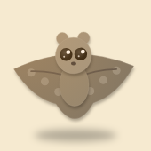
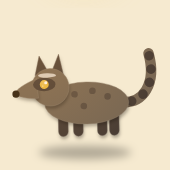
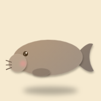
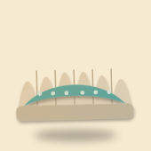

Now
Four creatures whose current art is weakest, redrawn two ways. Both directions keep the cut-paper look, with layered paper shadows and a light grain, and fix the science mistakes. Pick a direction and I'll redraw all 12 creatures (and the partners) in it.
Big heads, shiny eyes and rosy cheeks, like Tarsi. Every creature looks like a friend, so the set feels consistent and kid-friendly.
Truer body shapes and markings, like a nature-book illustration, still made of cut paper. Better for spotting real animals later.
Now it reads as a grey blob. Both versions show the gliding skin stretched between its legs, its big night eyes, and the mottled, lichen-like coat.

Science fix: Asian palm civets have a plain dark tail, not a ringed one. Both versions keep the dark face mask with white spots and the rows of dark spots on the body.

Science fix: dugongs have a flat, whale-like fluke, not a tall fish tail. Both versions add the downturned bristly snout it uses to graze seagrass, and seagrass to show what it eats.

Now it's flat and dull. Both versions show its wavy shell lips and the bright, patterned mantle that holds the algae it farms in sunlight.
